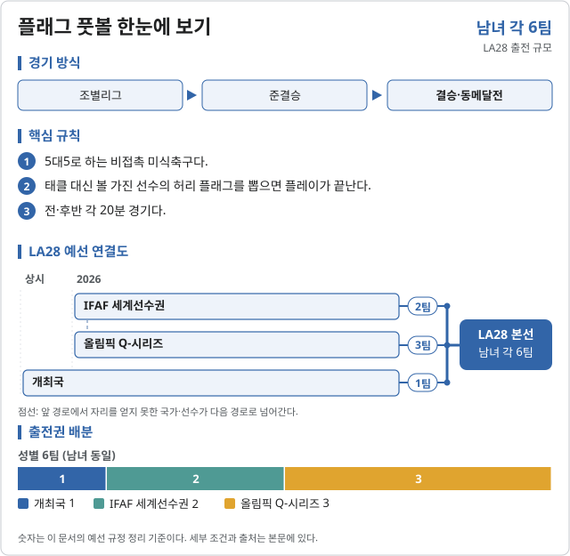
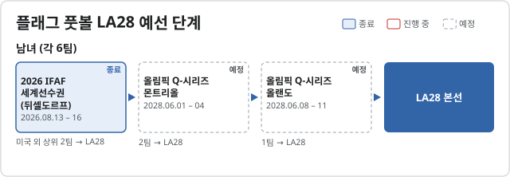

플래그 풋볼 (Flag football)
2028 LA 올림픽 플래그 풋볼에는 2개 세부종목이 있다.

LA28 예선 단계 2026.10.31 기준

남녀 (각 6팀)| 단계 | 시기 | 상태 | 다음 단계 | 결과·진출 | 한국 |
|---|
| 2026 IFAF 세계선수권 (뒤셀도르프) | 2026.08.13 – 16 | 종료 | 미국 외 상위 2팀 → LA28 |  이탈리아 ITA 남 은, 이탈리아 ITA 남 은,  캐나다 CAN 남 동 · 여 금, 캐나다 CAN 남 동 · 여 금,  멕시코 MEX 여 동 멕시코 MEX 여 동 | |
| 올림픽 Q-시리즈 몬트리올 | 2028.06.01 – 04 | 예정 | 2팀 → LA28 | | |
| 올림픽 Q-시리즈 올랜도 | 2028.06.08 – 11 | 예정 | 1팀 → LA28 | | |
출처: Wikipedia · LA28 플래그 풋볼
예선 규정
출전권 배정 (팀 수, 자료: 구 종목 페이지 기준)| 경로 | 팀 수 | 단위 |
|---|
| 남자 · 개최국 | 1 | 팀 |
|---|
| 남자 · IFAF 세계선수권 | 2 | 팀 |
|---|
| 남자 · 올림픽 Q-시리즈 | 3 | 팀 |
|---|
| 여자 · 개최국 | 1 | 팀 |
|---|
| 여자 · IFAF 세계선수권 | 2 | 팀 |
|---|
| 여자 · 올림픽 Q-시리즈 | 3 | 팀 |
|---|
예선 일정
예선 일정| 대회 | 기간 | 장소 |
|---|
| 2026 세계선수권 | 2026.08 | 두셀도르프 |
|---|
| 2027 대륙 선수권 | 2027 | 미정 |
|---|
| 올림픽 Q 시리즈 | 2028.06 | 몬트리올 · 올랜도 |
|---|
직전 올림픽 메달리스트
2024 파리 올림픽 미채택 · 해당 없음
대한민국
확보 쿼터: 미정. 예선 결과 발표 후 갱신한다.